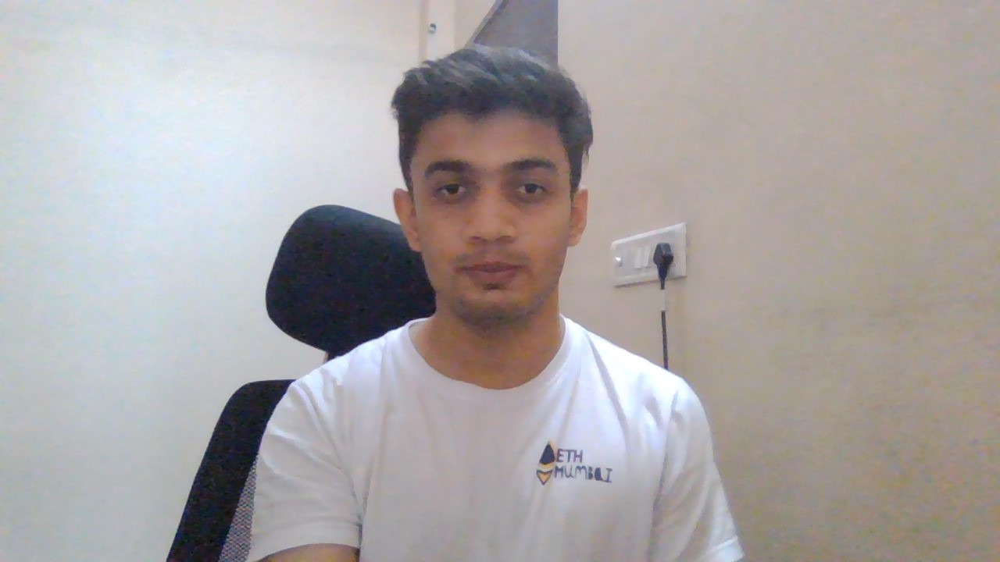

MY RESUME
ISHAAN CHATURVEDI

ABOUT ME:
- 3rd YEAR B.TECH STUDENT PURSUING THE COURSE OF COMPUTER SCIENCE ENGINEERING WITH THE SPECIALIZATION IN CLOUD COMPUTING
EDUCATION:
- Completed my school from Ryan International School
- Pursuing my B.Tech-CSE from SRM University
SKILLS:
- Hands-on experience in C, C++, Python, MySQL, Database management systems. Have knowledge in Data Structures and Algorithm (DSA).
EXPERIENCE:
- Had served as a member of a club “Codechef” and organized various events and hackathons. Have participated in various debates in the club and college.
- Served as a cadet in National Cadet Corps. Had attended the NCC camp in year 2020 and got the A certificate.